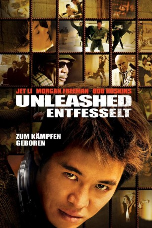

gesehen am 17.06.2015
gesehen am 17.06.2015Alternativ: Unleashed gesehen am 17.06.2015
 
 IMDB-Wertung: 7.0 / 10
IMDB-Wertung: 7.0 / 10  Metascore:
Metascore: 
Normales menschliches Verhalten ist ein Fremdwort für Danny, einen jungen Mann mit der Wissenstand und der sozialen Reife eines kleines Kindes. Von seinem "Besitzer" Bart wurde er zur Kampfmaschine gedrillt, muß sich jedoch mit einem Halsband versehen jedoch sonst stets in einem Käfig aufhalten, um für Bart in illegalen Gladiatorenkämpfen mit tödlichem Ausgang anzutreten. Als Bart nach einem schweren Unfall ins Koma verfällt, ist Danny auf einmal auf sich gestellt - und gerät an den blinden Klavierstimmer Sam, der ihn behutsam in die normale Welt einführt und ihm beibringt, was es heißt, ein Mensch zu sein. Nur eines Tages wacht Bart aus seinem Koma wieder auf und will seinen Besitz zurück. Bald steht Danny vor schweren moralischen Entscheidungen...
Jahr: 2005
Dauer: 103 Minuten
FSK: 16
Land: Frankreich Studio: EuropaCorp. DistributionTonspuren: DTS - ,
Untertitel: Deutsch,
Auflösung: 1080p (1920x816) Größe: 9287 MB
Genre: Action, Krimi, Drama, Thriller
Regisseur: Louis Leterrier
Drehbuch: Luc Besson
Soundtrack: Neil Davidge, Massive Attack
Darsteller:
 Jet Li als Danny
Jet Li als Danny Morgan Freeman als Sam
Morgan Freeman als Sam Bob Hoskins als Bart
Bob Hoskins als Bart Vincent Regan als Raffles
Vincent Regan als Raffles Tamer Hassan als Georgie
Tamer Hassan als Georgie Scott Adkins als Swimming Pool Fighter
Scott Adkins als Swimming Pool Fighter Alain Figlarz als Boss First Fight
Alain Figlarz als Boss First Fight Vincent Haquin als Raffle's Thug
Vincent Haquin als Raffle's ThugDatei: X:\2005(N-Z)\Unleashed - Entfesselt (2005, FSK16, 1920x816).mkv seit 12.06.2015
Festplatte: HD 2005(G-Z)-2006(A-Z)
 Es gibt insgesamt 50 Filme in der Gruppe '2005(N-Z)'
Es gibt insgesamt 50 Filme in der Gruppe '2005(N-Z)'